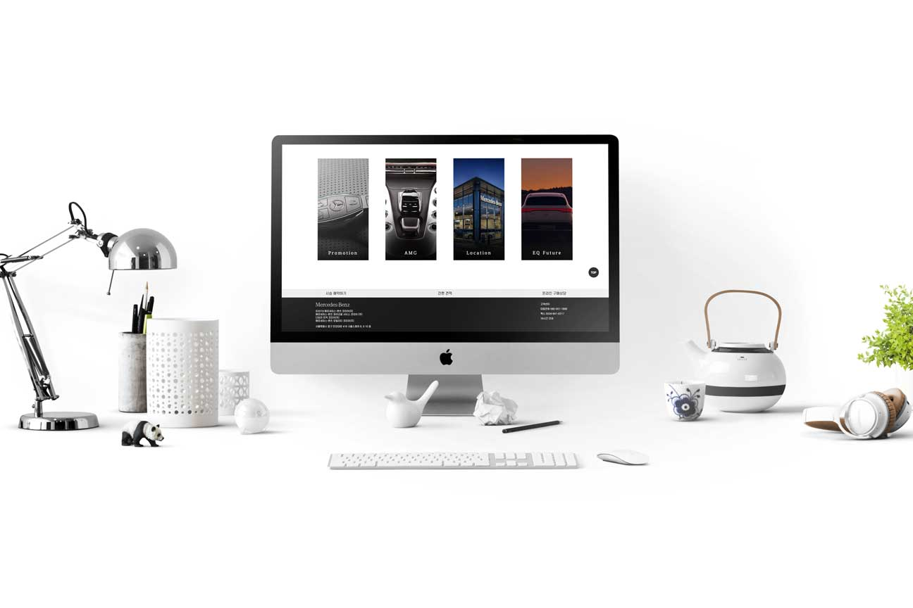
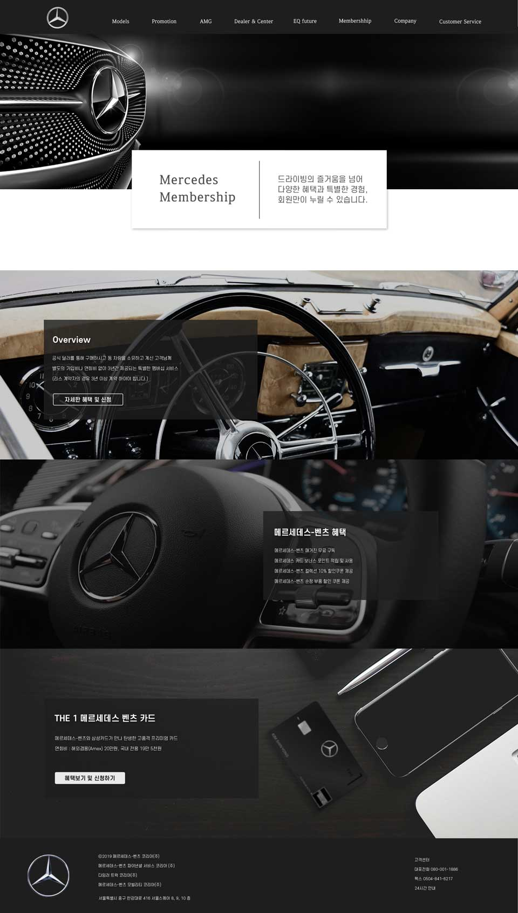

Overview
- Team Project / 2019. 10. - 2019. 11.
- Mercedes-Benz PC 사이트 리뉴얼
- Target : 20대 후반 - 30대 후반 직장인
- 프로젝트 보고서 다운로드
1. 사용자 중심의 화면 구성
인덱스부터 내비게이션까지 유저가 가장 필요로 하는 기능을 전면배치하여
사이트 이용시 정보 찾기에 어려움을 제거하였습니다.
또한 마우스와 키보드 동작을 최소화 할 수 있도록 유저가 필요한 위치에
필요한 기능 버튼을 배치하도록 디자인하였습니다.
2. Target을 고려한 럭셔리 디자인
Mercedes-Benz의 미려하고 고급스러운 디자인을 홈페이지 디자인에 반영하여
Mercedes-Benz의 브랜드가치를 웹에서도 전달될 수 있도록 하였습니다.
3. 웹 시연
사이트의 기능에 충실하지만 전혀 지루하지 않은 홈페이지가 되도록
다양한 인터랙티브 요소를 적재적소에 배치하여 즐거움을 더하였습니다.